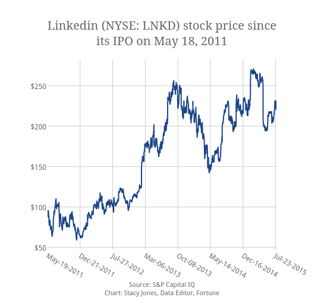

Od 2011. do Danas
Početkom 2011. godine, LinkedIn je omogućio otkup svojih dionica ulagačima sa početnom cijenom od 45 dolara pod simbolom „LKND“. Nakon prvog dana dionice su rasle za 171% i završile na cijeni od 94.25 dolara, 109% iznad početne cijene. 2011. godine, LinkedIn je zaradio 154.6 milijuna dolara samo na reklamaciji, čime je prestigao Twitter koji je zaradio 139.5 milijuna dolara. 2016. godine, Microsoft je odlučio otkupiti dionice LinkedIna po cijeni od 196 dolara, sveukupno 26.2 milijarda ,što je ujedno i najveći otkup koji je Mirosoft učinio do danas.
